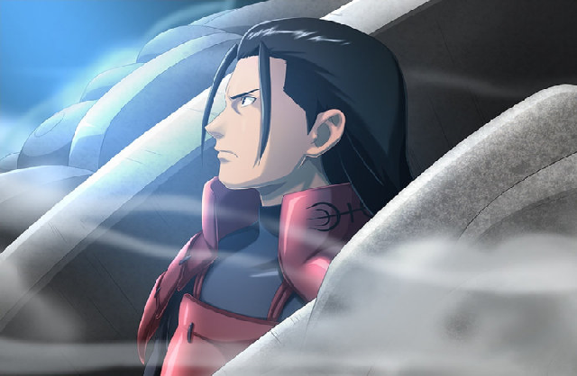

千手柱间（せんじゅ ハシラマ、Senju Hashirama），日本漫画《火影忍者》系列及衍生作品中的男性角色。千手一族的首领，木叶隐村的建立者之一，火之国木叶隐村的初代火影，第二代火影千手扉间的哥哥，六道仙人次子阿修罗的查克拉转世者 [1]。擅长使用“木遁秘术”，具有操控尾兽的能力；平定乱世，在五影大会中听从扉间以金钱换尾兽的提议将尾兽平均分配给五大国，并在终末之谷一战中打败宇智波斑。他是宇智波斑唯一敬畏的忍者，与宇智波斑一同被称为“传说中的忍者”。被忍界誉为“忍者之神”。后因不明原因去世。在木叶毁灭行动中，与他的弟弟千手扉间一起被大蛇丸以秽土转生的形式复活，后被猿飞日斩以尸鬼封尽封印。在第四次忍界大战中一度再次被大蛇丸以秽土转生的形式复活，与其他被复活的三位火影一起前往战场支援忍者联军，大战结束后，被大筒木羽衣解除秽土转生，灵魂回归净土。
木叶隐村的初代火影，擅长使用木遁秘术，享有「忍者之神」的称号。将忍者首领取名为火影的也是柱间。
黑色长发，身穿黑色紧身作战服，外部配以红色的叠层挂甲，左肩处的叠层挂甲上纹有千手一族的标志。双手的手腕处带有红色的铁质护腕，青年时期柱间以白色绸带作为护额，上面纹有千手一族的标志。在创立木叶隐村后，柱间佩戴铁质的木叶护额。在任期间身穿白色火影袍、内衬红色忍者服、以红色绸带作为护额，头戴火影斗笠。
该技能4个形态。 普通状态释放属于突进抓取，造成约30万左右伤害，其余两种攻击形态会造成约50万伤害。该技能具备招架效果，为第4种形态。
向前快速突进，攻击视野内横向整屏距离的敌人，对纵向也有一定的伤害判定，会将敌人卷入空中，11段攻击造成40万以上伤害。
千手柱间的必杀技，共造成31段攻击，70万以上伤害。攻击范围为视野内整屏横纵
